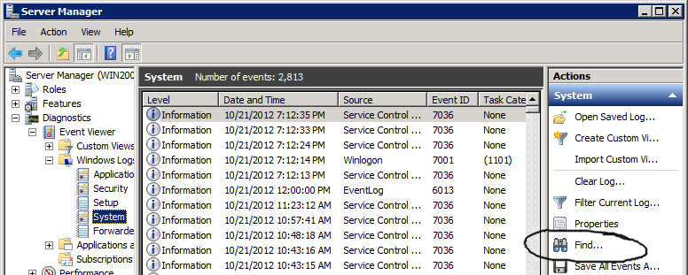
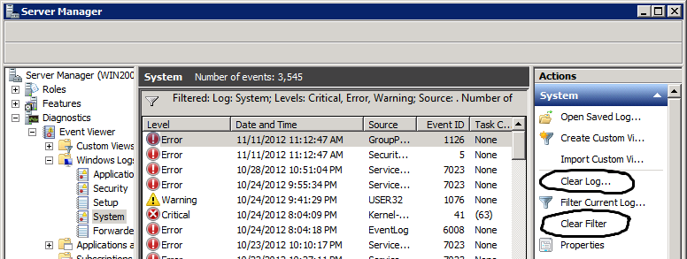

PowerShell Tip
Enabling Scripting - Execution Policies
Help on execution policies (note the plural):
help about_execution_policies
Show execution policy that is in effect:
Get-ExecutionPolicy
Show execution policy at different scopes. If it is Undefined
in all scopes, Powershell defaults to Restricted
Get-ExecutionPolicy -List
Enable script execution except for unsigned, remote scripts by
changing the machine-wide execution policy. (Remote supposedly
means from web, email, and sometimes UNC):
Set-ExecutionPolicy RemoteSigned
Change machine-wide execution policy back to the default. (You
can also set execution policy to Restricted
explicitly, but restoring it to Undefined is more
like a new machine. On a new machine, all scopes start out
Undefined, which makes the effective execution
policy Restricted by default anyway. Play around
with Get-ExecutionPolicy, Get-Execution Policy -List, and
Set-ExecutionPolicy on a new machine to see the effects,
or trust me.):
Set-ExecutionPolicy Undefined
If you don't trust the previous command to do what you want,
this changes the machine-wide execution policy to Restricted
explicitly, which is has basically the same effect as the
previous command I believe.
Set-ExecutionPolicy Restricted
Enable script execution just in this powershell process:
Set-ExecutionPolicy RemoteSigned -Scope Process
Windows Event Log Tips
Event Viewer GUI
Microsoft updated the Event Viewer GUI starting with Vista/2008.
I like the Ctrl+F Find, although the filtering
functionality could still use some work.
Find An Event with Ctrl+F
To find an event in the Event Viewer GUI, use
Ctrl+F or the Find button. (I'm embarrassed to
admit that it took me a long time to realize the Find button and
Ctrl+F were there.) I believe this is only
available in Vista/2008 and up.

Note: This even finds text strings that only exist in the
combination of the format string and message parameters.
Note: The GUI Event Viewer filter's "User" field will not find
Logon events by username.
Turning off Filtering - Cautionary Note
If you do Filtering in the Event Viewer GUI, and then turn the
Filtering back off, just be a little careful.

Notice how close together those two options on the right side
are. "Clear Filter" to see the entire log again, versus "Clear
Log..." to lose the entire log forever...slight difference
there. (I live in fear of someday choosing the wrong one...I
may be a sad, sad person.)
Powershell Event Log Cmdlets
Powershell has two cmdlets for retrieving Windows event logs,
Get-EventLog and Get-WinEvent. The
latter is new with Windows Vista/2008.
Get-EventLog
Pros:
-
It is the only cmdlet available on Windows XP/2003? (And on
newer versions of Windows, it is the only cmdlet that can read
''remote'' event logs from Windows XP/2003 computers?)
-
It provides a convenient
-Message parameter for
easily searching message contents. It is the only cmdlet that
efficiently lets you combine this message text search with a
parameter (-Newest) which can efficiently limit the
results to the most recent few events?
Cons:
-
It cannot return events from all Windows Vista/2008 and newer
event logs. It can only return events from the "Classic"
event logs (which I believe are the event logs like
Application, Security, Setup, and System, not the new ones
under Applications and Services Logs.)
Get-WinEvent
The pros and cons of Get-WinEvent are the converse
of those for Get-EventLog.
Filtering Event Logs By Message Description in Powershell
Powershell's two Windows event log cmdlets differ in their
filtering behavior, but both have useful options. Make use of
Get-WinEvent's -MaxEvents parameter and
Get-EventLog's -Newest parameter when testing
filters. They always seem to filter quickly, and reduce output
when testing.
Tip: The following might find recent logons for
a user named Lethargo, although you might need UAC elevation to
access the Security event log:
Get-WinEvent -FilterHashTable
@{ LogName="Security"; ID=4624; Data="Lethargo" }
-MaxEvents 10
Miscellaneous Event Log Tips
-
When reading through Logon event messages, don't stop at the
"Subject" user...keep reading further down the message.
-
With
Get-WinEvent -FilterHashTable, you can use
Data="service name", but I haven't found a way to
search on a whole message description (formatted or
unformatted?).
-
The wevtutil command can also list event log messages.
wevtutil gp "Service Control Manager" /ge /gm
Windows Event Log XPATH Filtering Tip
This query seemed to give only Svc Ctrl Mgr info events (&
verbose?), including starting, stopping, and changing from
demand to auto start (7040)...
<QueryList>
<Query Id="0" Path="System">
<Select Path="System">
*[System[Provider[@Name='Service Control Manager']
and (Level=4 or Level=0 or Level=5)
]
and
EventData[Data[@Name='param1']='Windows Time']
]
</Select>
</Query>
</QueryList>
This query should be its inverse, and it appears to be in
initial testing. Compared to the previous query, note the
additional Select * line, and the replacement of Select from the
previous query with Suppress. It seems to give System event
log, minus informational (& verbose?) Service Control
Manager messages about the Windows Time service.
<QueryList>
<Query Id="0" Path="System">
<Select Path="System">*</Select>
<Suppress Path="System">
*[System[Provider[@Name='Service Control Manager']
and (Level=4 or Level=0 or Level=5) ]
and
EventData[Data[@Name='param1']='Windows Time']
]
</Suppress>
</Query>
</QueryList>
Insanity, or
What I Learned from Configuring ODBC on Windows 7 64-bit
Prose may not be the best way to explain the technical aspects
of configuring ODBC drivers on 64-bit Windows 7. However, it
probably is the best way to emphasize the pathos.
32-bit Windows
Most of Windows consists of Dynamic Link Libraries, or DLLs. These
are files containing executable computer code that do not run by
themselves, but instead load into memory space of one or more
executable programs, or EXEs. When Microsoft Windows went from
16-bit to 32-bit, they decided to put the 32-bit DLLs and executables
in the appropriately-named C:\Windows\System32\ directory.
The 32-bit ODBC control panel was one such executable,
and it was appropriately named odbcad32.exe.
There was also a system called Windows On Windows, or WOW, which let
old 16-bit applications run on 32-bit Windows. (I am not sure what
directory WOW's supporting files lived in, but it doesn't matter
to this discussion.)
64-bit Windows
Fast forward a decade or two, and Windows goes from 32-bit to 64-bit.
Evidently enough people hard-coded the directory name
C:\Windows\System32\ into their programs and scripts that Microsoft
decided they could not change the name. Therefore, instead of
C:\Windows\System64\, the Windows 64-bit DLLs and executables
go in C:\Windows\System32\.
The 64-bit ODBC control panel is one such executable. However,
again people were too used to the name odbcad32.exe,
so the 64-bit ODBC control panel became
C:\Windows\System32\odbcad32.exe.
Just like WOW let 16-bit applications run on 32-bit Windows,
Microsoft created Windows on Windows 64, or WOW64, to let
32-bit applications run on 64-bit Windows.
And here we have our first incongruity. In 64-bit Windows,
while 64-bit Windows DLLs and executables go in C:\Windows\System32\,
the 32-bit Windows DLLs and executables go in C:\Windows\SysWOW64\.
To make the transition seamless for 32-bit applications,
when a 32-bit application asks 64-bit Windows for something from
C:\Windows\System32\, WOW64 behind the scenes redirects that to
C:\Windows\SysWOW64\ behind the scenes, so that 32-bit programs
get the 32-bit DLLs they need.
ODBC Control Panel
Because ODBC drivers are just DLLs that load into the memory
space of the executable that loads them, a 64-bit application
needs to use a 64-bit ODBC driver, but a 32-bit application still
needs to use a 32-bit ODBC driver. Windows 64-bit still has
a 32-bit ODBC Control Panel to manage those, which is
C:\Windows\SysWOW64\odbcad32.exe.
Notice that it is the number of bits the application runs as
that determines which ODBC drivers and ODBC Control Panel you
use to manage them. If you have a 32-bit version of Microsoft
Excel running on a 64-bit version of Windows, and you want
to access a database, you need a 32-bit ODBC driver that
matches the application, not a 64-bit ODBC driver that matches
the operating system.
After installing your 32-bit ODBC driver, however, you cannot
run Window 64-bit's default 64-bit ODBC Control Panel. If you do,
it won't see your 32-bit ODBC driver. You open a web browser
and search online, and find out that you have to open the
32-bit ODBC Control Panel, at C:\Windows\SysWOW64\odbcad32.exe.
However, there is a final injury added to the insult. On Windows 7,
if you leave the 64-bit ODBC Control Panel up in the background
behind your web browser, and you try to run the
32-bit ODBC Control Panel, then instead of running
the 32-bit ODBC Control Panel, Windows just brings the already-running
copy of the 64-bit ODBC Control Panel to the top, still without
your 32-bit ODBC driver showing...Oh, and the window title bars?
They are exactly the same, with nothing to indicate that you
got the wrong ODBC Control Panel (aside from what drivers, etc.
are listed.)
Conclusion
So, if you have a 32-bit application running 64-bit Windows 7,
and you need to access something via ODBC, the steps you
need to take are:
- Install the 32-bit ODBC driver
- Look through your open windows, and close any running copy of
the ODBC Control Panel
- Run the 32-bit ODBC Control Panel from
C:\Windows\SysWOW64\odbcad32.exe
You should then see your 32-bit ODBC driver in the Drivers tab.